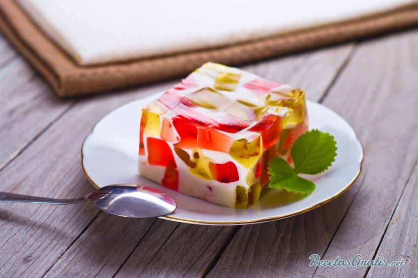

Postres
El postre es el plato de sabor dulce o agridulce que se toma al final de la comida, o de merienda. Cuando se habla de postres se entiende alguna preparación dulce, bien sean cremas, tartas, pasteles, helados, bombones, etc. Por extensión se denomina postre a cualquier comida dulce incluso si su objetivo no es ser ingerida al final de la comida. Algunos ejemplos son las galletas, chocolates y magdalenas.
 |
 |

Algunos postres
Milhojas:
La milhojas es un dulce tradicional de la repostería española.
Es un pastel de forma rectangular, que contiene merengue o crema
pastelera entre dos capas de hojaldre espolvoreado con azúcar glas.
Crepe:
Se denomina crepe, crepa o crep (del francés crêpe, y a su vez del
latín crispus, ‘crespo’) a la receta francesa, extendida por toda
Europa, hecha fundamentalmente de harina de trigo, con la que se
elabora una masa en forma de disco. Se sirve habitualmente como base
de un plato o postre aplicándole todo tipo de ingredientes dulces o salados.
 |
Beneficios |
 |
| 1- Los postres te hacen más feliz. 2- Los postres están llenos de nutrientes. 3- Comer postre realmente puede mejorar tu control de peso. |
 |
4- Nuestros postres para restaurantes te ofrecen una oportunidad
conveniente para incorporar más frutas a tu dieta. 5- Los postres pueden remediar los efectos secundarios negativos de la dieta |
Berlinesa
Una berlinesa (en alemán Berliner Pfannkuchen),
conocida también como: berlín, bola de Berlín o bola de fraile. Es una preparación
de forma esférica de masa dulce frita en aceite y posteriormente rellena a través
de una incisión que se le hace para tal fin. Es elaborada con harina, leche, azúcar,
manteca, huevo, levadura, esencia de vainilla, ralladura de limón y sal. Luego de
frita es espolvoreada con azúcar glas.
Cocada
La cocada es un dulce típico de España,
México, Colombia, Chile, Panamá, Perú, Brasil. Elaborado a base de una
masa de coco y leche que posteriormente es horneada.
Tres leches y cuatro leches
Consiste en un bizcocho bañado con tres tipos de leche: leche evaporada,
crema de leche y leche condensada, que le dan su nombre. Suele acompañarse
con un merengue de claras de huevo, con frutas o almendras. Usualmente la
receta no lleva mantequilla y por eso tiene una textura esponjosa. A la
variante conocida como cuatro leches se le agrega, además, leche pasteurizada.
¡Recuerda!
Muchas personas piensan qué comer dulces es sinónimo de engordar y no es así. Existen muchas maneras de acabar con Los antojos sin tener que requerir alimentos ultraprocesados. Puedes consumir galletas, dulces, bebidas, entre otras, y seguir estando saludables y bien con tu cuerpo.